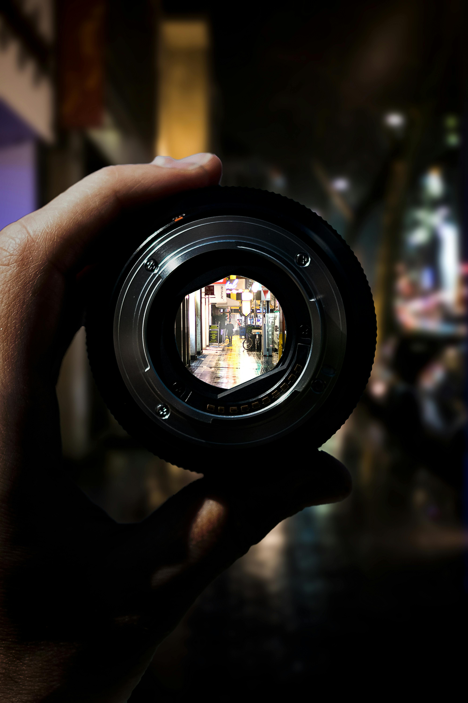
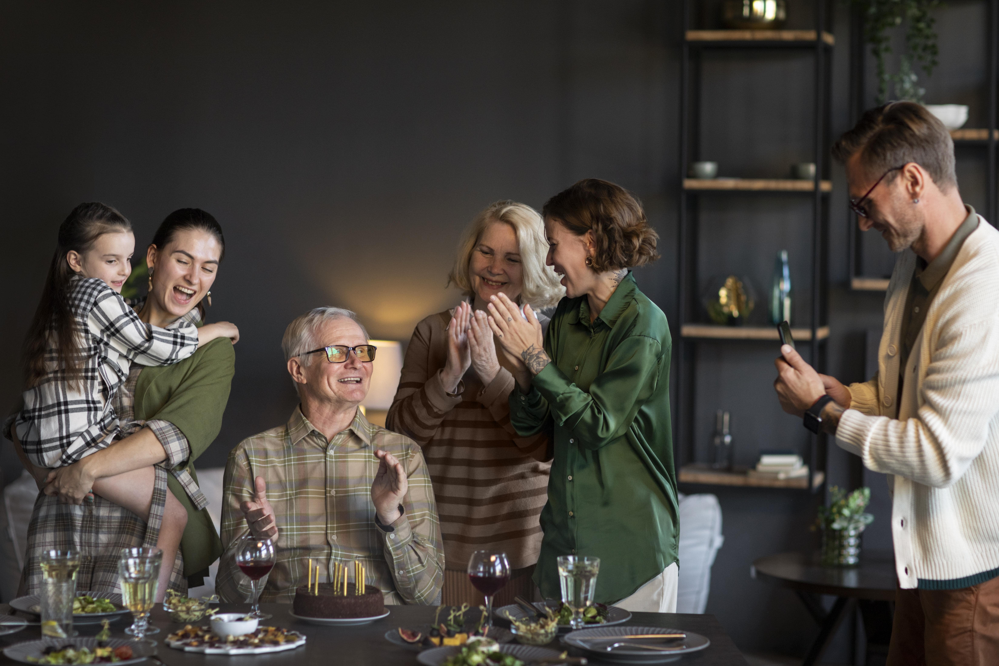

FOTOGRAFO PROFESIONAL
Descubre el mundo a través de mi lente. Cada imagen cuenta una historia, cada disparo captura un momento único. Bienvenido a mi universo visual, donde la pasión por la fotografía cobra vida. Sumérgete en un viaje de emociones, belleza y creatividad. ¡Bienvenido a mi mundo fotográfico!
IR A LA GALERIA
